11.4 Instalación de SSSD en el cliente Ubuntu Desktop
1. Recursos
En este apartado, hay que tener disponible una máquina virtual con Ubuntu Desktop 20.04/22.04 en la misma red que el servidor openldap.
2. Instalación de SSSD
SSSD solo funciona si estamos utilizando un canal seguro de comunicación (TLS).
Antes de iniciar la instalación en el equipo cliente, vamos a configurar nuestro archivo /etc/hosts para que sea capaz de encontrar el servidor LDAP. Para ello, se va a insertar la siguiente línea que contiene la ip del servidor y el nombre del dominio.
192.168.0.25 ciber.local
root@goofy:/home/jcrequena# nano /etc/hosts
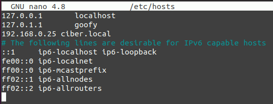
Instalamos los paquetes necesarios en el cliente Ubuntu.
root@goofy:/home/jcrequena# apt install sssd libpam-sss libnss-sss
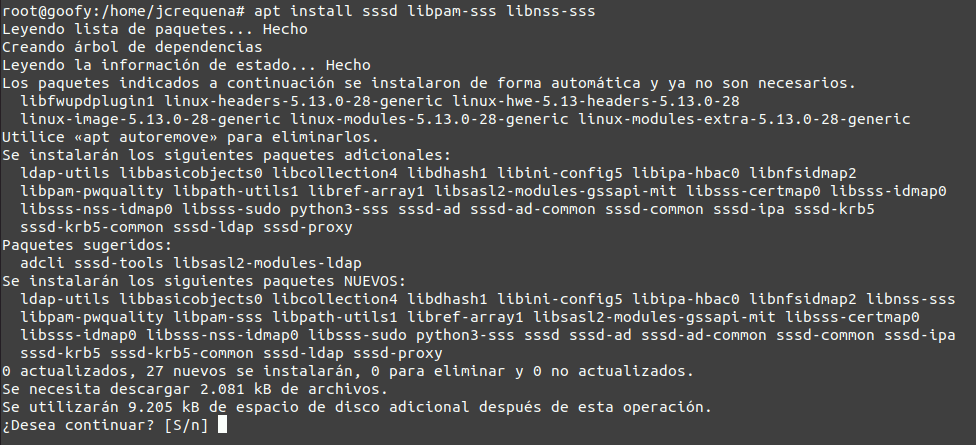
Por defecto SSSD no viene con ningún archivo de configuración, por lo que lo crearemos uno nuevo:
root@goofy:/home/jcrequena# nano /etc/sssd/sssd.conf
Y agregamos las siguientes líneas:
[sssd]
services = nss, pam
config_file_version = 2
domains = default
[nss]
[pam]
offline_credentials_expiration = 60
[domain/default]
ldap_id_use_start_tls = True
cache_credentials = True
ldap_search_base = dc=ciber,dc=local
id_provider = ldap
auth_provider = ldap
chpass_provider = ldap
access_provider = ldap
ldap_uri = ldap://ciber.local
ldap_default_bind_dn = cn=readonly ,ou=usuarios,dc=ciber,dc=local
ldap_default_authtok = p4ssw0rd
ldap_tls_reqcert = demand
ldap_tls_cacert = /etc/ssl/certs/ldapcacert.crt
ldap_tls_cacertdir = /etc/ssl/certs
ldap_search_timeout = 50
ldap_network_timeout = 60
ldap_access_order = filter
ldap_access_filter = (objectClass=posixAccount)
Guardamos: CTRL + O y salimos: CTRL + X.
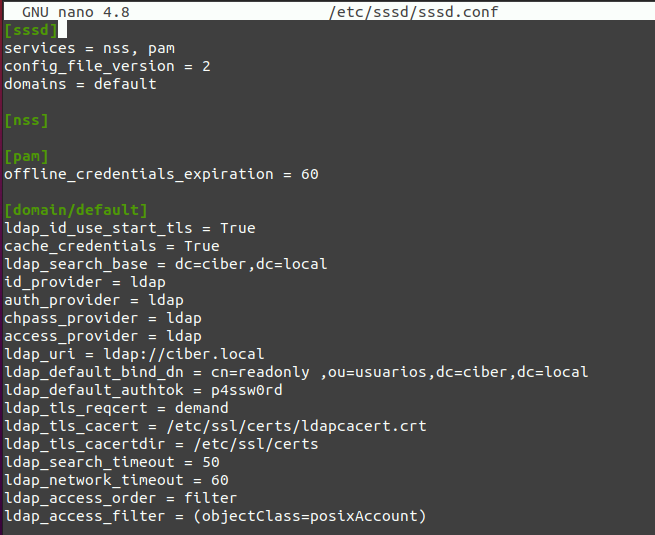
A continuación, hay que descargar el certificado de la CA necesario para poder conectarnos al servidor OpenLDAP:
root@goofy:/home/jcrequena# openssl s_client -connect ciber.local:389 -starttls ldap -showcerts < /dev/null | openssl x509 -text | sed -ne '/-BEGIN CERTIFICATE-/,/-END CERTIFICATE-/p'
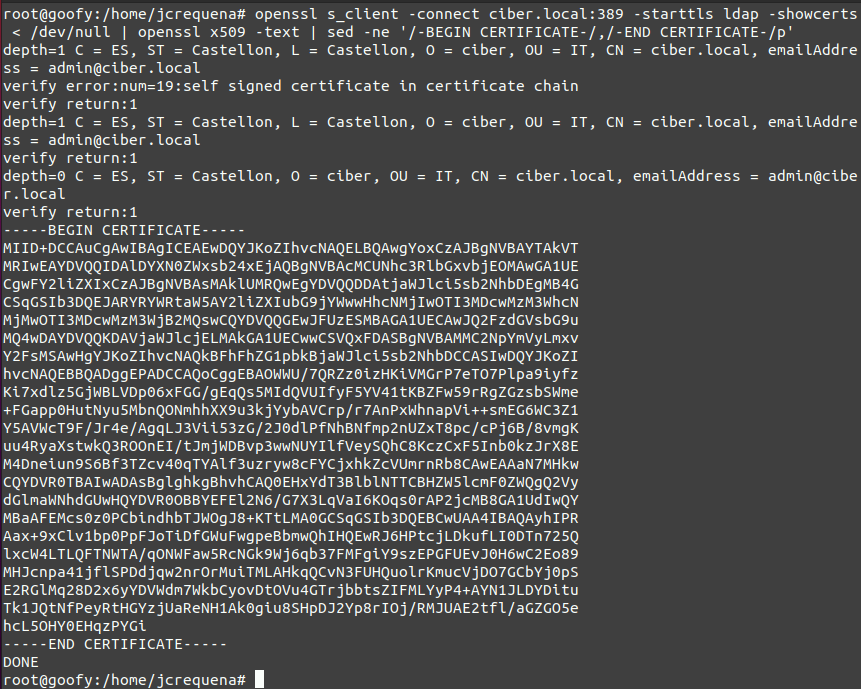
-----BEGIN CERTIFICATE-----
MIID+DCCAuCgAwIBAgICEAEwDQYJKoZIhvcNAQELBQAwgYoxCzAJBgNVBAYTAkVT
MRIwEAYDVQQIDAlDYXN0ZWxsb24xEjAQBgNVBAcMCUNhc3RlbGxvbjEOMAwGA1UE
CgwFY2liZXIxCzAJBgNVBAsMAklUMRQwEgYDVQQDDAtjaWJlci5sb2NhbDEgMB4G
CSqGSIb3DQEJARYRYWRtaW5AY2liZXIubG9jYWwwHhcNMjIwOTI3MDcwMzM3WhcN
MjMwOTI3MDcwMzM3WjB2MQswCQYDVQQGEwJFUzESMBAGA1UECAwJQ2FzdGVsbG9u
MQ4wDAYDVQQKDAVjaWJlcjELMAkGA1UECwwCSVQxFDASBgNVBAMMC2NpYmVyLmxv
Y2FsMSAwHgYJKoZIhvcNAQkBFhFhZG1pbkBjaWJlci5sb2NhbDCCASIwDQYJKoZI
hvcNAQEBBQADggEPADCCAQoCggEBAOWWU/7QRZz0izHKiVMGrP7eTO7Plpa9iyfz
Ki7xdlz5GjWBLVDp06xFGG/gEqQs5MIdQVUIfyF5YV41tKBZFw59rRgZGzsbSWme
+FGapp0HutNyu5MbnQONmhhXX9u3kjYybAVCrp/r7AnPxWhnapVi++smEG6WC3Z1
Y5AVWcT9F/Jr4e/AgqLJ3Vii53zG/2J0dlPfNhBNfmp2nUZxT8pc/cPj6B/8vmgK
uu4RyaXstwkQ3ROOnEI/tJmjWDBvp3wwNUYIlfVeySQhC8KczCxF5Inb0kzJrX8E
M4Dneiun9S6Bf3TZcv40qTYAlf3uzryw8cFYCjxhkZcVUmrnRb8CAwEAAaN7MHkw
CQYDVR0TBAIwADAsBglghkgBhvhCAQ0EHxYdT3BlblNTTCBHZW5lcmF0ZWQgQ2Vy
dGlmaWNhdGUwHQYDVR0OBBYEFEl2N6/G7X3LqVaI6KOqs0rAP2jcMB8GA1UdIwQY
MBaAFEMcs0z0PCbindhbTJWOgJ8+KTtLMA0GCSqGSIb3DQEBCwUAA4IBAQAyhIPR
Aax+9xClv1bp0PpFJoTiDfGWuFwgpeBbmwQhIHQEwRJ6HPtcjLDkufLI0DTn725Q
lxcW4LTLQFTNWTA/qONWFaw5RcNGk9Wj6qb37FMFgiY9szEPGFUEvJ0H6wC2Eo89
MHJcnpa41jflSPDdjqw2nrOrMuiTMLAHkqQCvN3FUHQuolrKmucVjDO7GCbYj0pS
E2RGlMq28D2x6yYDVWdm7WkbCyovDtOVu4GTrjbbtsZIFMLYyP4+AYN1JLDYDitu
Tk1JQtNfPeyRtHGYzjUaReNH1Ak0giu8SHpDJ2Yp8rIOj/RMJUAE2tfl/aGZGO5e
hcL5OHY0EHqzPYGi
-----END CERTIFICATE-----
A continuación, hay que copiar el certificado y lo pegamos en la siguiente ubicación /etc/ssl/certs/ldapcacert.crt.
root@goofy:/home/jcrequena# nano /etc/ssl/certs/ldapcacert.crt
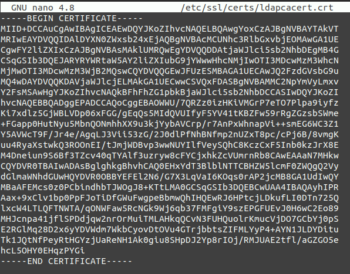
Guardamos y verificamos que el certificado es válido:
root@goofy:/home/jcrequena# openssl s_client -connect ciber.local:389 -CAfile /etc/ssl/certs/ldapcacert.crt
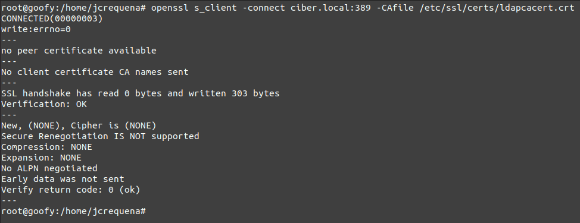
Al final vemos que nos devuelve Verify return code: 0 (ok) por lo que es válido.
Ahora modificaremos el archivo /etc/ldap/ldap.conf para que apunte al certificado que hemos añadido al equipo:
root@goofy:/home/jcrequena# nano /etc/ldap/ldap.conf
Para este caso, se comenta la línea TLS_CACERT y se añade la siguiente:
TLS_CACERT /etc/ssl/certs/ldapcacert.crt
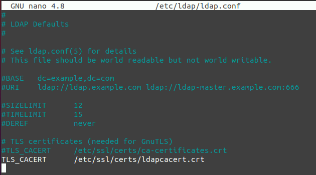
Una vez modificado el fichero, guardamos.
Ahora daremos permisos adecuados a la carpeta sssd.
root@goofy:/home/jcrequena# chmod 600 -R /etc/sssd
Reiniciamos el servicio y comprobamos el estado del servicio para comprobar que todo está en orden.
root@goofy:/home/jcrequena# systemctl restart sssd
root@goofy:/home/jcrequena# systemctl status sssd
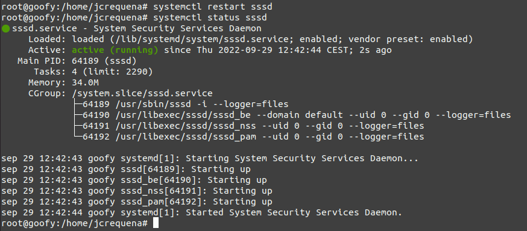
Finalmente se habilita el servicio para que inicie al iniciarse el equipo:
root@goofy:/home/jcrequena# systemctl enable sssd
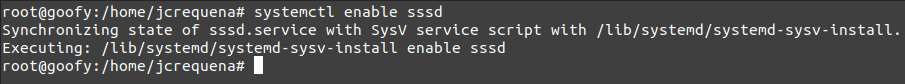
3. Configurar la creación automática del directorio Home
Para habilitar la creación automática del directorio de los usuarios en su primer inicio de sesión deberemos configurar los módulos de PAM. En primer lugar se modifica el archivo de configuración de PAM:
root@goofy:/home/jcrequena# nano /etc/pam.d/common-session
En este archivo añadiremos la siguiente línea debajo de pam_sss.so
session required pam_mkhomedir.so skel=/etc/skel/ umask=0022
Quedando de la siguiente forma:
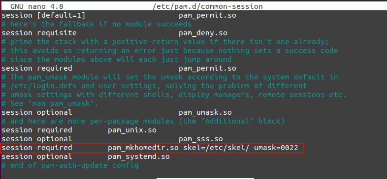
4. Verificar autenticación mediante SSD OpenLDAP
Ya hemos terminado con la instalación y configuración de SSSD, ahora vamos a ver si podemos loguearnos en el cliente Ubuntu con el usuario que hemos creado antes.
Hemos creado un usuario antes, el cual podemos verlo desde el servidor ubuntu (openldap) mediante el siguiente comando:
root@orion:/home/administrador# ldapsearch -H ldapi:/// -Y EXTERNAL -b "ou=usuarios,dc=ciber,dc=local" dn -LLL -Q
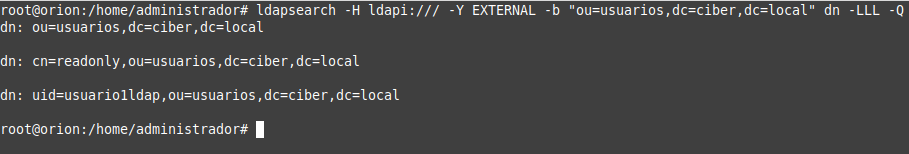
Para ello, deberemos reiniciar nuestro cliente Ubuntu Desktop. Una vez hecho, en la ventana de login vamos a ¿No está en la lista?
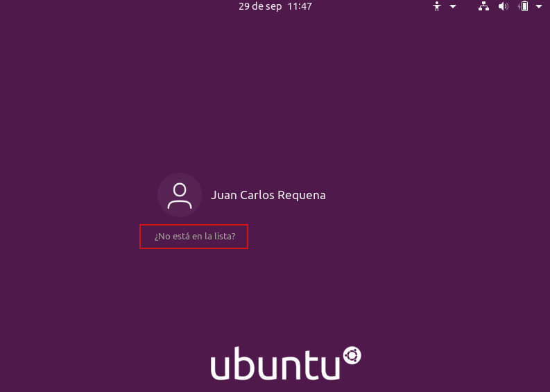
Y escribimos el usuario que hemos creado por ldap:
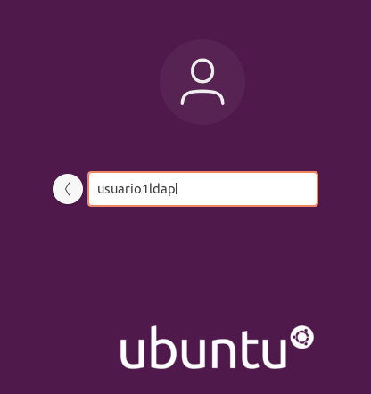
Ahora, dispondremos de un usuario creado mediante ldap en el servidor al que hemos podido acceder desde nuestro cliente.
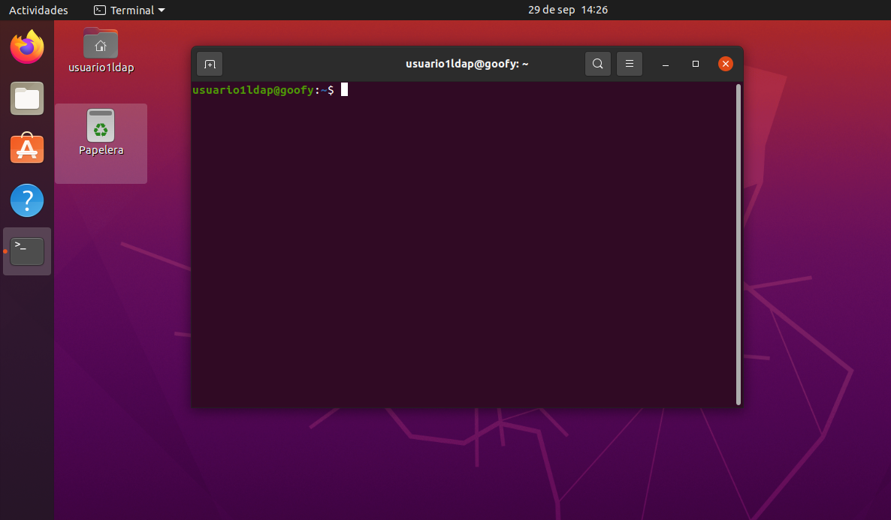
Obra publicada con Licencia Creative Commons Reconocimiento No comercial Compartir igual 4.0